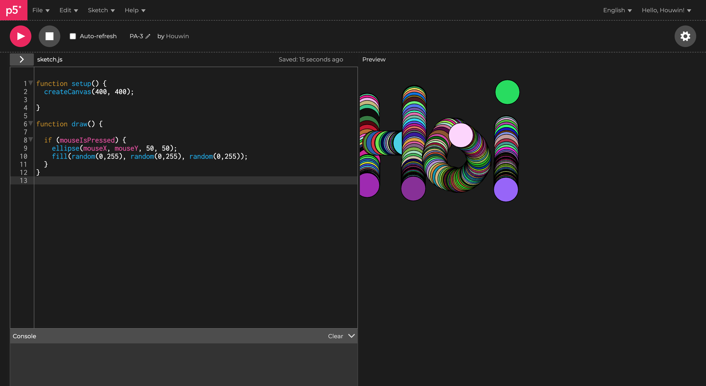
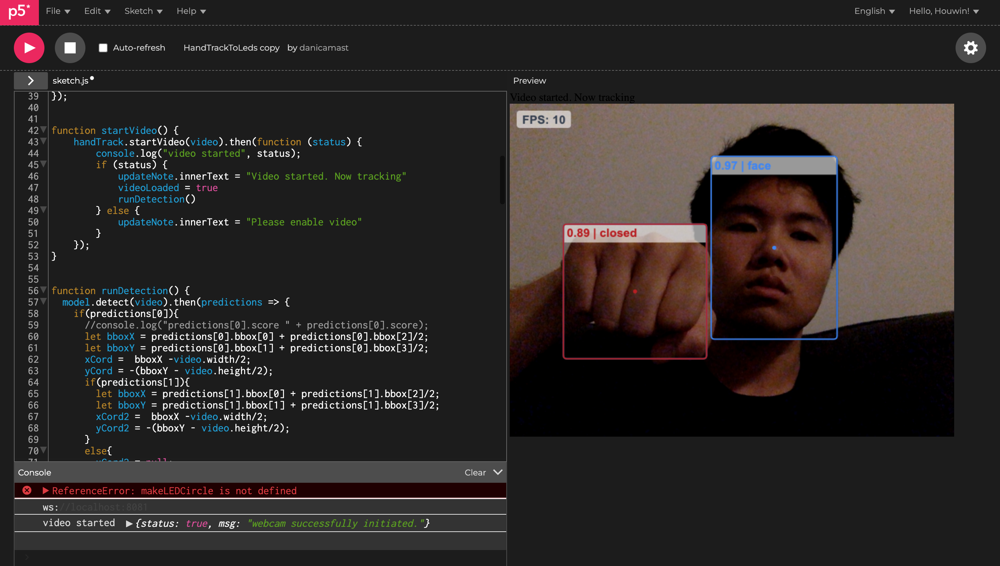
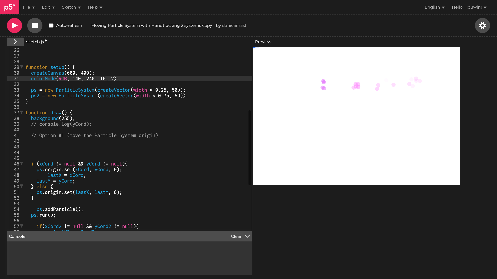
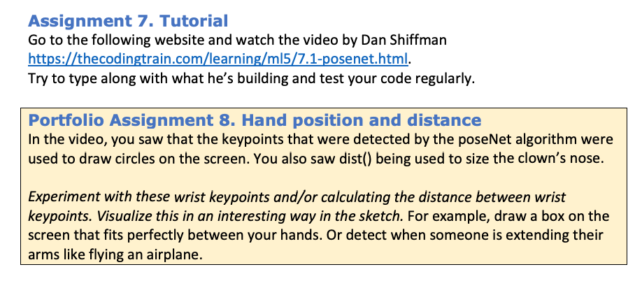
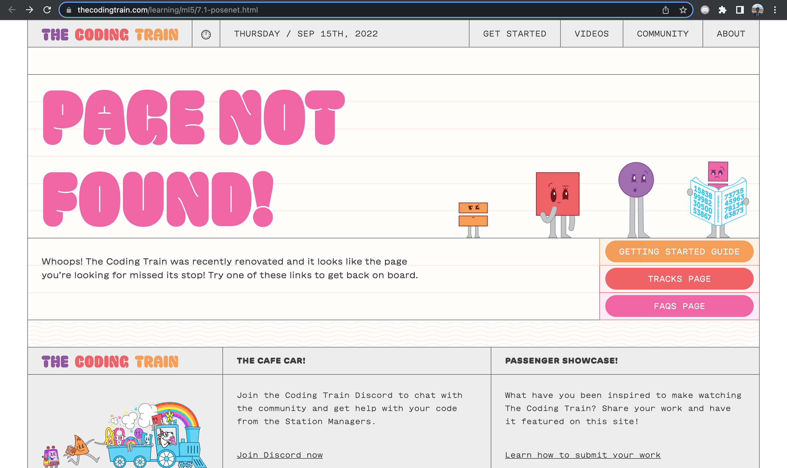
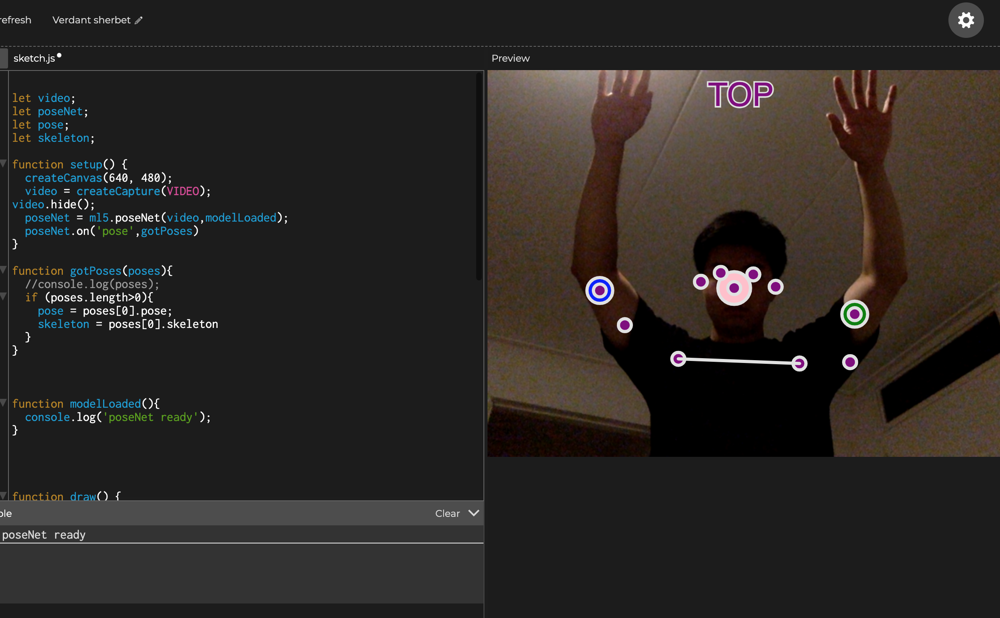

HCI Technologies
Portfolio
2022
Houwin
CMD-HT | HCI Technologies - Computer Vision
Portfolio Assignment 3
Dit is de eerste opdracht die we in onze portfolio moesten opnemen. De opdracht was om een random kleur toe te voegen in de 'get started' sketch.
Hierin heb ik de if statement gebruikt wanneer de muis is ingedrukt worden er cirkels getekend met een random kleur.
De random kleur heb ik aangemaakt door de RGB waarde te gebruiken. Het leest een random kleur waarde tussen de 0 en 255 van rood, groen en blauw.

Portfolio Assignment 7
De tweede opdracht die ik in mijn portfolio heb opgenomen, is het rond spelen met de camera detection. Het eerste voorbeeld is het herkenen van het gezicht en handen en daarvan detecteren
of het hand open is of dicht. Daarnaast was er een kleuren cirkel waar je iets mee kon doen, maar ik had geen idee dus heb dat eruit gehaald.
De tweede voorbeeld is het herkennen van je gezicht waarmee je een spoor kan tekenen van rond vliegende particles/cirkels. Deze heb ik van kleur veranderd en achtergrond naar wit voor een ander effect.


Portfolio Assignment 8
Deze opdracht die ik in mijn portfolio heb opgenomen, is het gebruik maken van keypoints van de posnet. Ik moest werken met het bepalen van de afstanden tussen je handen.
Maar het linkje van de vorige opdracht kon ik niet openen. Daarin stond een uitleg filmpje hoe je het kon aanpakken. Dus ik heb zelf moeten zoeken hoe je een afstand kon creëren.
Helaas heb ik het niet voor elkaar gekregen.


Portfolio Assignment 9
Hier moest ik ook verder werken met de keypoints. In dit geval was het de bedoeling om iemand te detecteren die aan het juichen is. Omdat het linkje hier ook bij nodig was, ben ik zelf gaan uitvogelen
en zoeken hoe ik dit moest aanpakken. Uiteindelijk is dit me wel gelukt.
